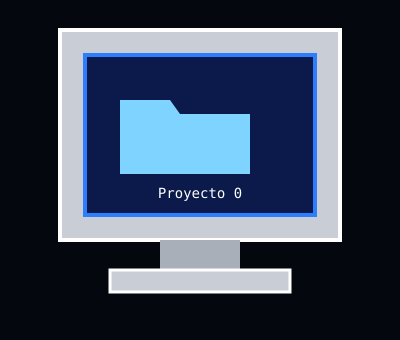
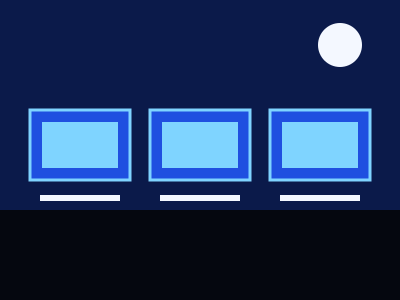
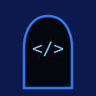
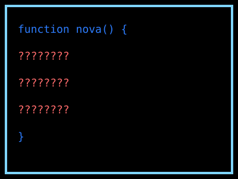

El Último Código
Una historia de ciencia ficción, misterio y aventura.
Alex encontró una carpeta que nadie debía abrir. Le quedan pocos minutos.
Abrir Proyecto 0
El descubrimiento

Alex se queda después de clases en el laboratorio para terminar un proyecto. El edificio queda en silencio.
En una computadora antigua aparece una carpeta desconocida llamada Proyecto 0. Al abrirla, una voz digital responde.
Para saber más sobre cómo se construyen páginas como esta, visita MDN Web Docs.
Personajes
- Alex Estudiante curioso que no sabe rendirse.
- NOVA Programa misterioso que vive en el sistema.
- Leo Amigo de Alex, experto en hardware.

El Creador Dejó el código. Nadie sabe quién es.
Las primeras pistas
El sistema comienza a fallar. En la pantalla aparece un mensaje: "Quedan pocos minutos para completar el código."
¿Quieres saber qué hay detrás del error?
Pista: NOVA no es un virus. Fue creada para proteger algo. Busca los tres fragmentos del código en la siguiente escena.
Leer más sobre inteligencia artificial.
El código perdido

Alex debe encontrar las partes faltantes. Pulsa cada fragmento para recuperarlo.
Recuperados: 0 de 3
function nova() { // fragmento 1 perdido // fragmento 2 perdido // fragmento 3 perdido }
El último código
El sistema sigue bloqueado. Completa los tres fragmentos para continuar.
Alex completa el código y descubre que NOVA fue creada para proteger información importante de la institución.
Aparece un último mensaje. ¿Qué hará Alex?